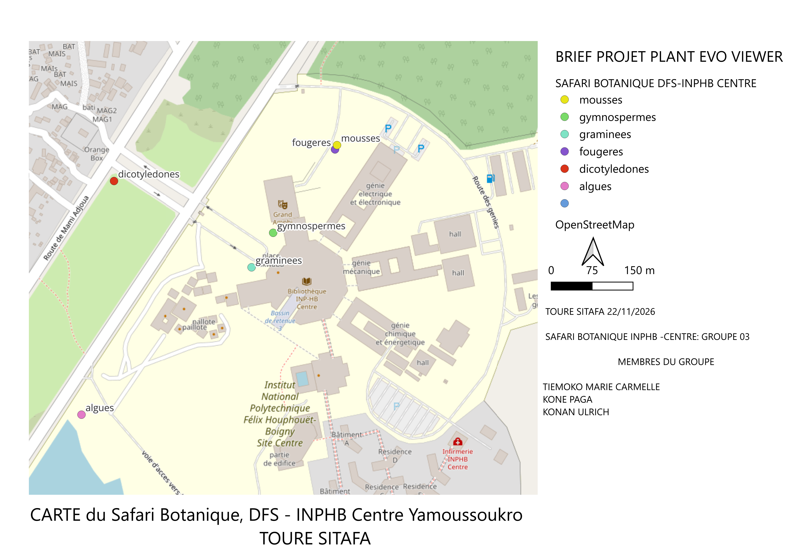
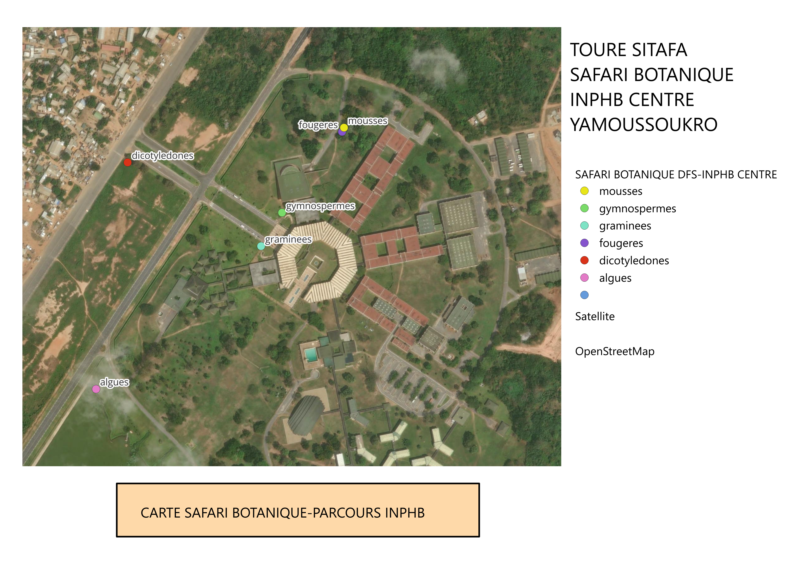

4 — Cartes du safari botanique réalisées à l’INP-HB, centre de Yamoussoukro
Chaque point représente un spécimen géolocalisé avec KoboCollect. Son numéro indique l’équipe et le spécimen : par exemple, E3-05 signifie équipe 3, spécimen 5. Les points sont colorés selon leur groupe végétal.

